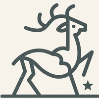

叶海龙属于海龙科，主要栖息在隐蔽性较好的浅海水域
因其游动起来，摇曳生姿，被称为“世界上最优雅的泳客”。
属肉食性，捕食浮游小生物等。
分布于南澳大利亚南部及西部海域。
由于其极高的观赏价值，使得这一珍稀动物遭到一些不法人士的大肆捕捉，且水域污染的问题愈来愈严重，另外存活的概率仅有5%，因此叶海龙被列为重点保护珍稀动物。
朱鹮系东亚特有种。
鸟中“东方宝石”
栖息于海拔1200～1400米的疏林地带
觅食小鱼、蟹、蛙等水生动物，兼食昆虫。
由于环境恶化等因素导致种群数量急剧下降，至20世纪80年代仅我国陕西省南部的汉中市洋县秦岭南麓仅有7只野生种群，后经人工繁殖，种群数量有所增加。